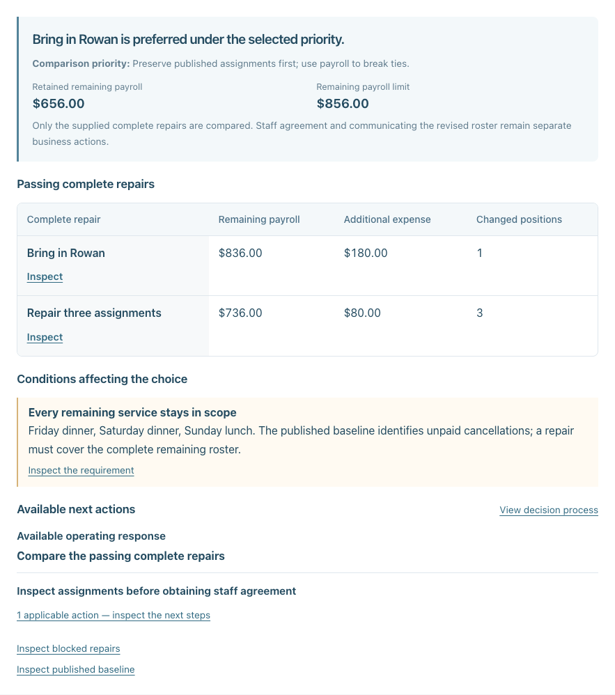
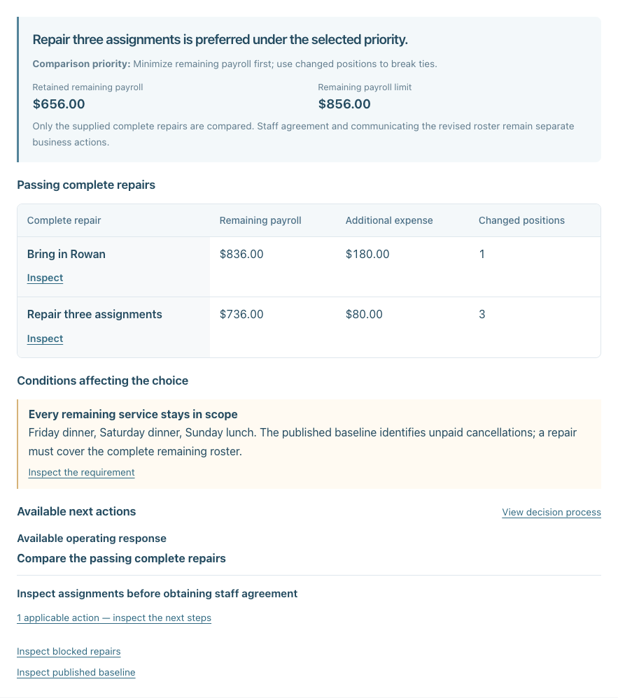
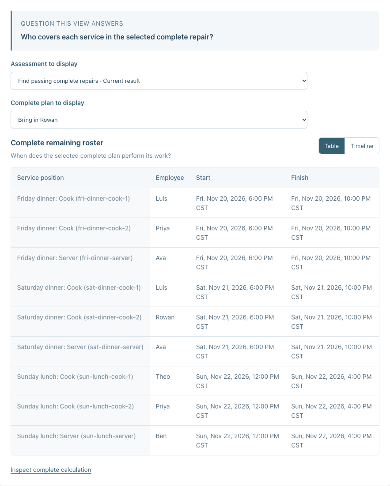

Return to the full-availability situation from Elena’s coverage analysis: Rowan can work the whole Saturday shift, and two supplied repairs meet the restaurant’s recorded requirements. Neither leaves another service short.
The choice still has consequences. Rowan’s relief quote preserves the other published assignments. The cheaper alternative moves Theo to Saturday, moves Ben into Sunday cooking and adds Ava to Sunday serving. The roster is already published; employees have planned around it. Elena also has a labor expense boundary to respect.
Calling the cheaper option “best” would hide a priority inside the recommendation. Calling the smaller change “fairer” would claim more than the calculation establishes. Elena needs to state what should come first for this decision.
This fictional continuation uses Repair a published restaurant roster 1.1.0 in the Restaurant operations collection. The comparison priority changes within the same workflow; the four supplied repairs, employee records and mandatory conditions stay fixed. Open the workflow and follow the shared setup instructions.
Keep the operating requirements fixed.
Elena’s next assessment question is which feasible complete repair comes first under the priority she declares? Each candidate still represents the entire remaining roster. The priority orders the repairs that meet the mandatory conditions; it cannot make a failed repair workable.
Every comparison requires the recorded qualifications, availability, role coverage, rest, hours and non-overlapping assignments. Each enforces the $856 remaining-payroll limit. Rowan is available from 6–10 p.m. The earlier failed repairs stay failed.
| Repair | Remaining payroll | Additional expense | Changed published positions |
|---|---|---|---|
| Bring in Rowan | $836 | $180 | 1 |
| Repair three assignments | $736 | $80 | 3 |
Additional expense compares each complete remaining roster with the $656 retained after Nora’s cancelled, unpaid shift is removed. Earlier-week payroll is outside that figure. A changed position is a published service-and-role slot assigned to a different person, including a vacancy. Replacing Nora counts once; it does not count separate notifications to Nora and her replacement.
State what should come first.
Elena opens Inputs → Repair decision → Comparison priority. She can keep Compare without ranking, choose Preserve published assignments first, or choose Minimize remaining payroll first.
The stability-first priority minimizes changed published positions, then remaining payroll. The cost-first priority minimizes remaining payroll, then changed positions. These are ordered comparisons, with no invented exchange rate between a dollar and an employee’s disruption. If repairs tie on both declared criteria, the comparison retains the tie.
She chooses one priority, selects Apply inputs, then Calculate or Recalculate as offered. The Decision summary shows the preferred proposal and the other passing repair. Switching to the other priority changes that comparison without changing the employee facts or repeating the still-current feasibility calculation.
Shared basis. Full Rowan availability, the same four complete repairs and all the same mandatory staffing and expense conditions. Two repairs remain feasible in both calculations.
What changes. Only Comparison priority changes in the same workflow: preserve published assignments first, or minimize remaining payroll first. The selected priority activates its pinned app; the current feasibility calculation is retained.
Preserve published assignments first
Bring in Rowan is preferred.
- First priority
- Fewest changed published positions
- Additional expense
- $180
- Changed positions
- 1


Elena preserves the other published assignments. The remaining payroll is $836, within the same $856 limit.
Minimize remaining payroll first
Repair three assignments is preferred.
- First priority
- Lowest remaining payroll
- Additional expense
- $80
- Changed positions
- 3


The coordinated changes retain the required service coverage at $736 remaining payroll. The additional expense is $100 lower than bringing in Rowan.
What this means for the decision. The requirements do not change. The declared priority selects a different preferred repair among the same supplied alternatives. Elena remains responsible for choosing the priority and confirming the changes.
The preference changes because the authored priority changes. It does not establish that either priority is universally right. In both reports, the preferred repair is preferred among the four supplied candidates; the app has not searched every possible restaurant roster.
Read the proposal the team will actually receive.
Before choosing, Elena inspects a repair in Supporting reports → Complete roster. The complete assignments matter more than its label: the cheaper repair moves Theo into Saturday cooking, Ben into Sunday cooking and Ava into Sunday serving. Rowan’s repair replaces Nora while retaining the other eight positions.


The report lets Elena trace the coverage across services and see the required work intervals. Recorded qualification and availability support that proposal; neither tells her that the affected employees have agreed to the change.
The $100 difference becomes a decision Elena can discuss.
For this already-published week, Elena chooses the stability-first priority. She is willing to spend $100 more than the coordinated repair to avoid two additional changed positions. Bringing in Rowan gives $836 remaining payroll, within the $856 limit.
That is Elena’s management judgment. Decision Lab makes the tradeoff explicit and applies the declared order consistently. It does not assign a monetary value to employee inconvenience or establish the fairness of the resulting week.
Elena can now explain the proposal to the owner and team: the required services remain covered under the supplied records, the other published assignments are preserved, and the extra expense fits the recorded boundary. She obtains Rowan’s agreement and communicates the change through the restaurant’s usual process. The calculation does not contact Rowan, record agreement or publish a roster.
If Rowan cannot accept the complete shift, Elena has a reason to return to the analysis rather than treating the preferred label as a reservation. She updates the availability, applies the inputs and recalculates. A priority can order passing repairs; it cannot repair a failed condition.
Reuse the reasoning while keeping the meanings intact.
The decision pattern remains repairing a published commitment. The workflow applies the Complete a Commitment assessment pattern through three pinned apps: a common feasibility calculation and two optional comparisons. The same coverage, compatibility and expense reasoning supports both priorities; the preference rule is the part that changes.
This is the practical value of reusable reasoning patterns: Elena can make a priority explicit without rewriting what qualifications, availability or coverage mean. Hermod authored the workflow and app definitions. A different employee, position or repair catalog needs an adapted authored profile and a new published version; the current example remains bounded to its configured roster. The worked-example source keeps those implementation details separate from Elena’s business decision.
If Rowan’s availability later ends at 8 p.m., the relief repair fails regardless of which priority Elena selects. Return to the availability comparison to see why a changed fact requires a fresh assessment. An operating requirement and a preference have different jobs.